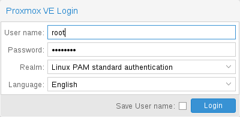
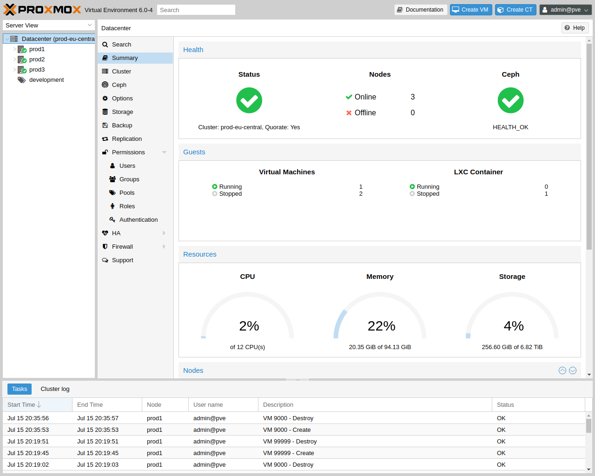

4. GUI#
Proxmox VE는 간단합니다. 별도의 관리 도구를 설치할 필요가 없으며 웹 브라우저를 통해 모든 작업을 수행할 수 있습니다(최신 Firefox 또는 Google Chrome 권장). 내장된 HTML5 콘솔은 게스트 콘솔에 액세스하는 데 사용됩니다. 대안으로 SPICE를 사용할 수도 있습니다.
Proxmox 클러스터 파일 시스템(pmxcfs)을 사용하기 때문에 어느 노드에나 연결하여 전체 클러스터를 관리할 수 있습니다. 각 노드는 전체 클러스터를 관리할 수 있습니다. 전용 관리자 노드가 필요하지 않습니다.
모든 최신 브라우저에서 웹 기반 관리 인터페이스를 사용할 수 있습니다. 모바일 장치에서 연결 중임을 Proxmox VE가 감지하면 더 간단한 터치 기반 사용자 인터페이스로 리디렉션됩니다.
웹 인터페이스는 https://youripaddress:8006(기본 로그인은 root이며, 비밀번호는 설치 과정에서 지정됨)를 통해 접속할 수 있습니다.
4.1. 특징#
Proxmox VE 클러스터의 원활한 통합 및 관리
리소스의 동적 업데이트를 위한 AJAX 기술
SSL 암호화(https)를 통해 모든 가상 머신 및 컨테이너에 대한 보안 액세스 보장
수백, 수천 개의 가상 머신을 처리할 수 있는 빠른 검색 기반 인터페이스
보안 HTML5 콘솔 또는 SPICE
모든 객체(VM, 스토리지, 노드 등)에 대한 역할 기반 권한 관리
다중 인증 소스 지원(예: 로컬, MS ADS, LDAP, …)
2단계 인증(OATH, Yubikey)
ExtJS 7.x JavaScript 프레임워크 기반
4.2. 로그인#

서버에 연결하면 먼저 로그인 창이 표시됩니다. Proxmox VE는 다양한 인증 백엔드(Realm)를 지원하며, 여기에서 언어를 선택할 수 있습니다. GUI는 20개 이상의 언어로 번역되어 있습니다.
참고
하단의 확인란을 선택하면 클라이언트 측에서 사용자 이름을 저장할 수 있습니다.
이렇게 하면 다음에 로그인할 때 입력하는 시간을 절약할 수 있습니다.
4.3. GUI 개요#

Proxmox VE 사용자 인터페이스는 네 가지 영역으로 구성됩니다.
헤더
상단에 있습니다. 상태 정보를 표시하고 가장 중요한 작업을 위한 버튼이 포함되어 있습니다.
리소스 트리
왼쪽에 있습니다. 특정 개체를 선택할 수 있는 탐색 트리입니다.
콘텐츠 패널
중앙 영역입니다. 선택한 객체는 여기에 구성 옵션과 상태를 표시합니다.
로그 패널
하단에 있습니다. 최근 작업에 대한 로그 항목을 표시합니다.
해당 로그 항목을 두 번 클릭하여 자세한 내용을 보거나 실행 중인 작업을 중단할 수 있습니다.